| 日付 | 2010年1月20日（水） |
|---|---|
| 山域 | 谷川 |
| メンバー | 単独 |
| 山行形態 | 日帰り |
| アクセス | 電車 |
| ルート (Map) | 大堤→つつじ新道→四阿屋山→薬師堂コース→薬師堂 |
先週末に引き続き、本日も西高東低の気圧配置が緩んで日本海側でも晴れそうだ。
再び雪山の展望を求めて北に向かい、吾妻耶山に登ることにする。
稲包山と同じようにこちらも雪は深そうだが、今回は本気モード。
なんとしても山頂に立ってやろうと意気込んで出発する。
水上駅の手前、上牧駅から吾妻耶山の姿がきれいに見えている。
やはり上の方は真白だ。
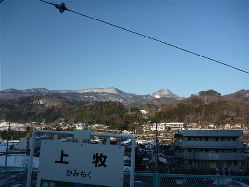
8:16 水上駅到着。標高490m。
近くの低い山も雪化粧している。朝早いこともあって、驚くほど寒い。
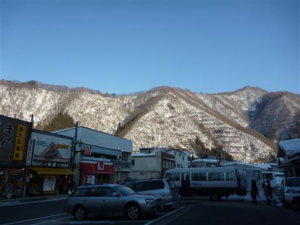
山はもちろん、地面も屋根も全て雪に包まれている。
雪がないのは除雪されている道路だけだ。
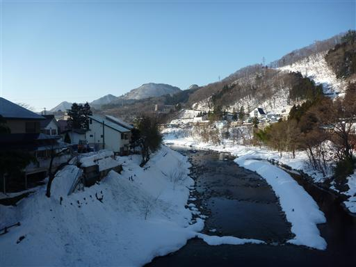
稲包山のときの反省から、今回はできるだけ登山道が短いルートを選ぶ。
車道歩きは長くなるが、ここは雪がないのでスピードが出せる。
あくまでも目標は登頂だ。
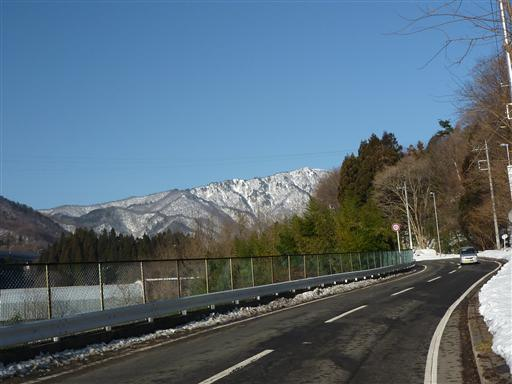
資材置き場は雪に埋まっている。
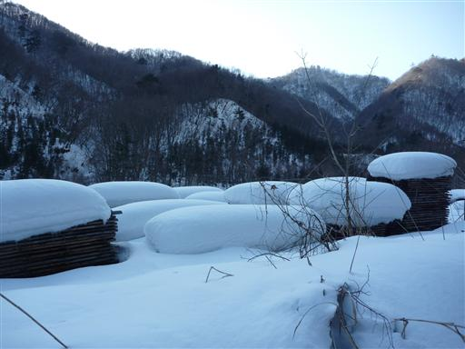
標高を上げて峠に差し掛かってくると、車道も白くなってくる。
雪は深く、ガードレールは雪の中だ。
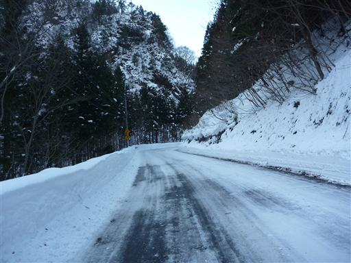
登山道入口に到着。1時間半ほどの車道歩きだった。
ここから登山道が始まるためスパッツをつける。
わかんは持っていないため今回もつぼ足だ。
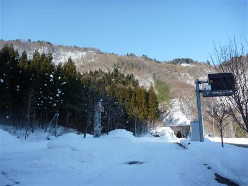
ここからは北方の展望が少し開ける。山頂からの展望に期待が膨らむ。
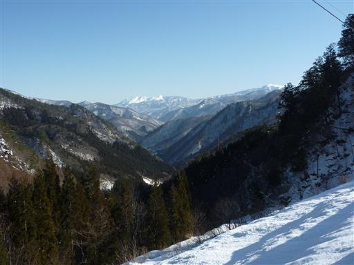
除雪後の雪の壁を乗り越えて登山道に入っていく。
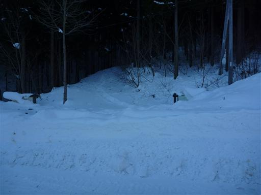
なんと登山道には先行者の踏み跡がある。
ラッセルしなくて済むのは非常にありがたい。
今日の踏み跡ではないが、比較的新しそうだ。

やはりラッセル済みだと行程ははかどる。あっという間に赤谷越に到着する。
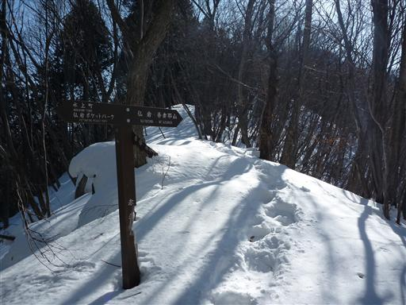
ここからは快適な尾根歩き。先のほうに吾妻耶山の山頂が見えている。
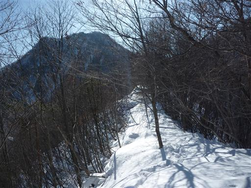
仏岩。巨大な岩が突き立っている。
仏の姿に見えるらしいが…
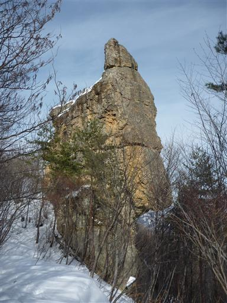
雪面は雪の模様に光と影が重なって非常に美しい。
足跡は途絶えがちだが、気にせず突き進んでいく。
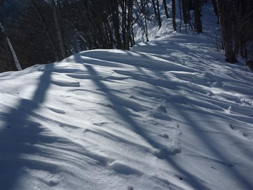
トラバース道。この辺りは上の斜面から雪が転がり落ちてきて
登山道に積もっているので、非常に歩きにくい。
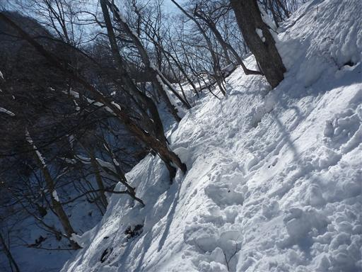
木の枝にも雪はたくさん積もっている。今にも落ちてきそうだ。
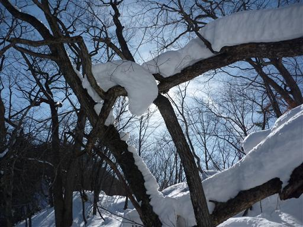
順調に歩を進めていくと、これから吾妻耶山への登りが始まるという肝心なところで、
足跡がぱたりと消えてしまう。ここからが核心部なのに…
先行者はなぜこんな中途半端なところであきらめてしまったのか…
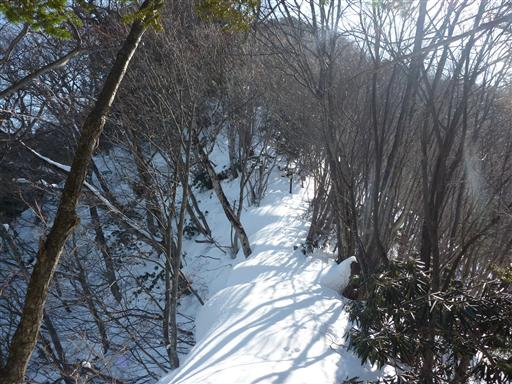
直登コースはロープでふさがれていたので、右のトラバース道に入っていく。
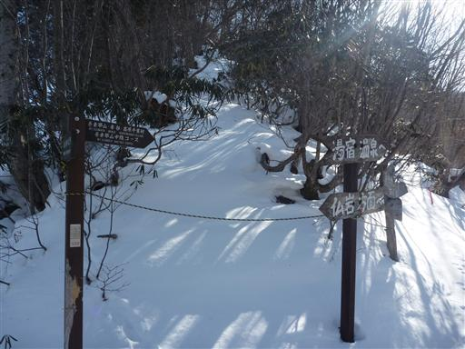
深くて重い雪が続く。これは結構つらい。
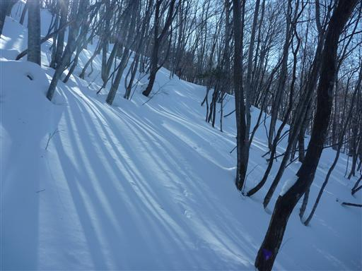
雪でできた円盤があちらこちらに転がっている。
雪の塊が落下して斜面を転がった結果できたものだ。
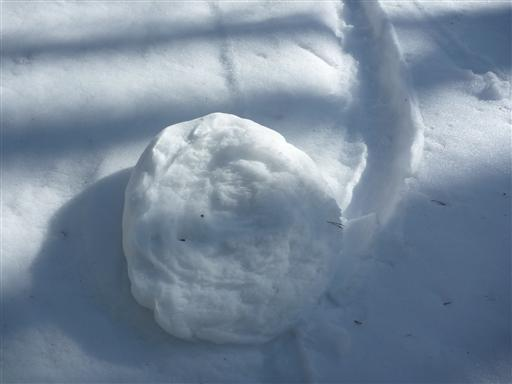
山頂に続く道はかなりの急斜面が続く。
雪があるところの急斜面がこれほど登りにくいとは思わなかった。
木につかまり、雪をつかんで、少しずつ登っていく。
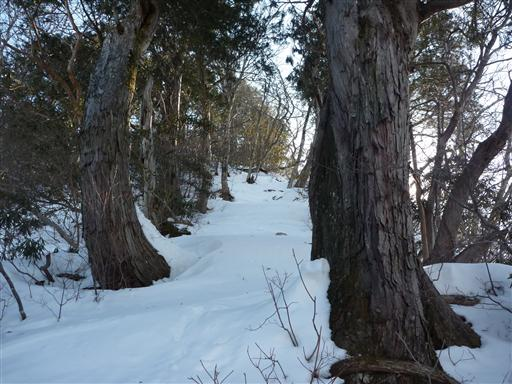
急斜面を登りきったところは少し谷筋になっている。
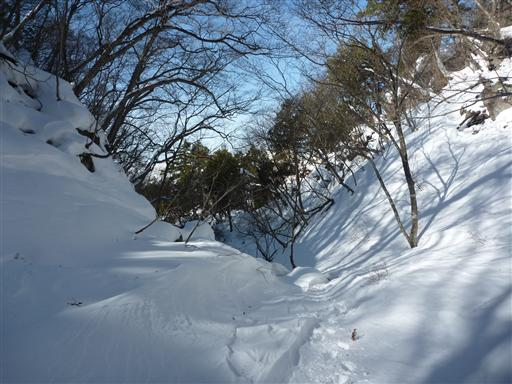
風が強いのか、雪の表面はきれいな模様を描いている。
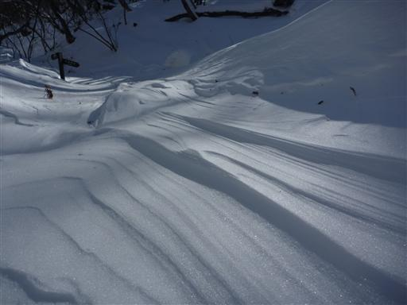
脇には岩壁があり、少々複雑な地形だ。
この谷筋から脱出する部分は腰まで埋まるほど雪が深く、足が上がらない。
手で雪を払いのけながら何とか突破する。
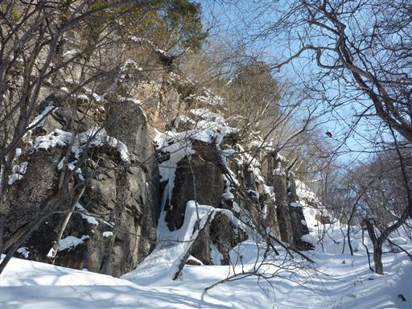
ここから山頂までは、ほぼ平坦なところを歩くのみ。
樹林に囲まれた静かな雪原を歩いていく。
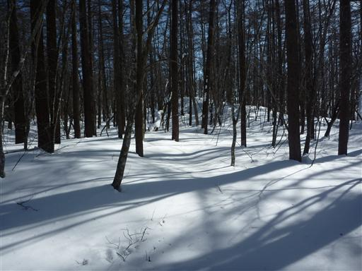
ふと顔を上げると、カモシカがこちらをじっと見つめている。丸々と太った立派なカモシカだ。
進行方向に陣取っているので、警戒させないよう少し角度をずらして歩いていくと
どこかに去って行ってしまった。
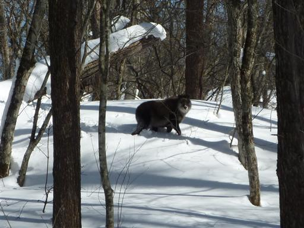
12:29 カモシカと出会ってから程なくして吾妻耶山山頂に到着する。標高1341m。
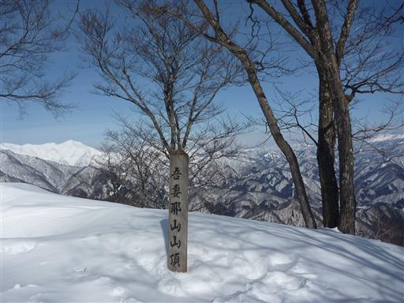
山頂には祠が3つ並んでいる。石でできた大き目のものだ。
山頂付近はスノーシューで歩いた跡がある。
おそらくスキー場のほうから歩いてきたのだろう。

山頂からは期待通りの大展望が広がる。
真白なピークは3ヶ月前に登った谷川岳だ。
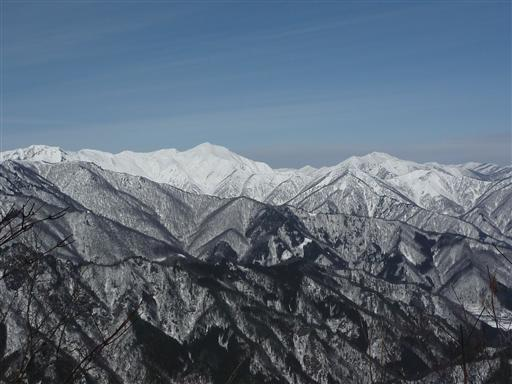
木の間からは赤城山がゆったりとした裾野を引いている。
こちらは谷川に比べるとだいぶ雪は少なそうだ。
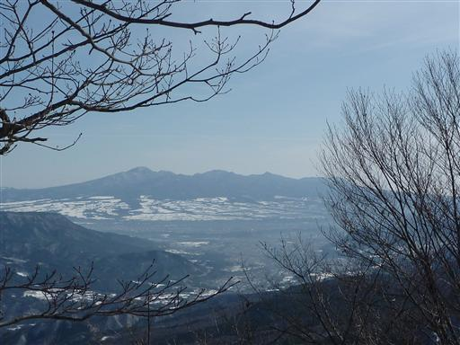
手前に見える平たい山は上州三峰山。
荒船山と並んで有名なテーブルマウンテンだ。
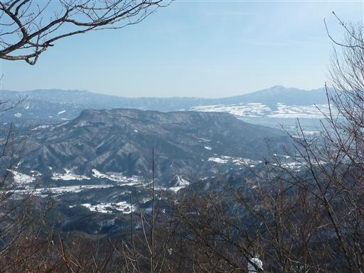
北東方面は白い山々がどこまでも続いている。
右から上州武尊山、至仏山、平ヶ岳。遠くには日光や足尾の山々も見えている。
360度ではないが、すばらしい展望の山頂だ。
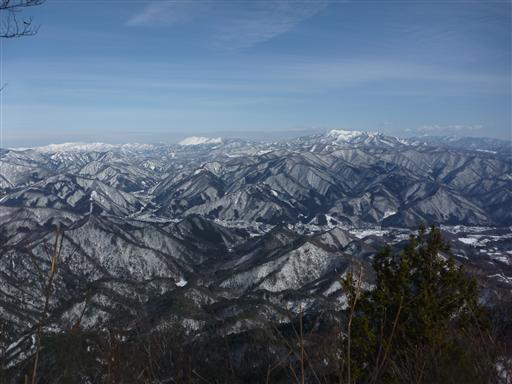
腰を下ろして昼食をとる。樹木があるので風はなく、さほど寒くない。
雪の上には、どこから来たのか小さなクモがうろうろしている。
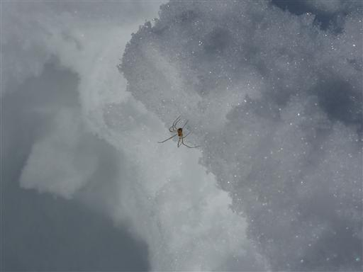
ここから南下して大峰山を経由して下山というルートを考えていたが、
深い雪のラッセルで時間をとってしまったので、素直に来た道を帰ることにする。
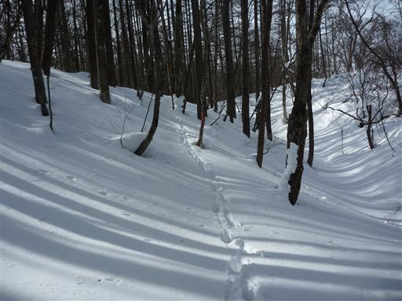
雪は比較的浅いところもあり、ところどころ穴が開いている。
雪の下は空洞になっているので、雪が浅いとズボッと踏み抜いてしまい余計に危険だ。
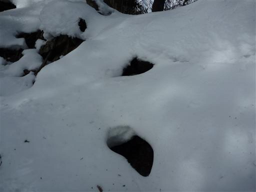
下りは相当の急斜面。よくこの坂を登ってきたものだと、自分でも驚くほどだ。
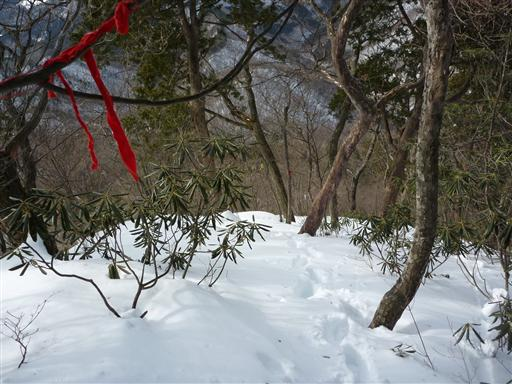
無事、下山地点に戻ってくる。ここでスパッツを外す。
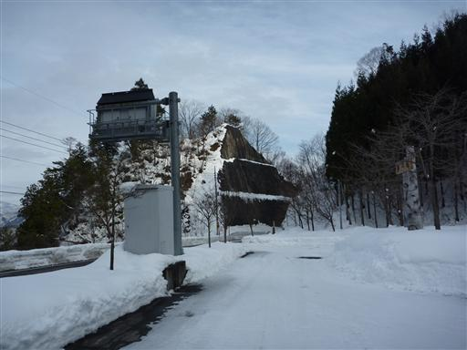
道路の上には氷が散らばっている。

見上げるとツララがたくさんできている。
今日の昼は気温が高かったので、解けて落ちてきたのだろう。少し危険だ。
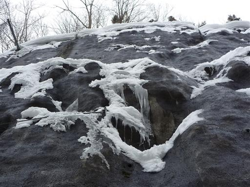
雪に覆われた田舎の中をとぼとぼと歩いていく。
誰も踏み込む人はいないのか、雪原に足跡は全くない。
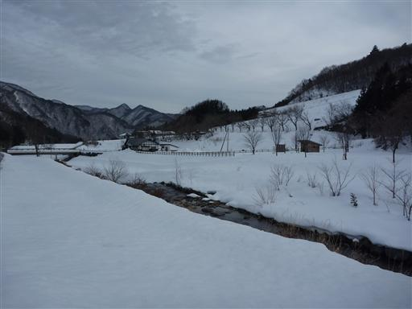
行きには気付かなかった稲荷滝という標識を見つける。
マイナスイオン値「18000個/cm3」と書かれている。
尾瀬高校が計測したと書かれているが、どのようにして何を計測したのやら…
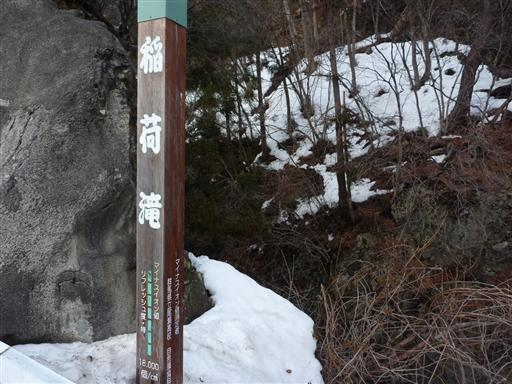
滝は道路のすぐそばにある。展望箇所まで続く階段は雪に覆われていて
除雪はされておらず足跡もない。
スパッツはもう外しているので、膝まである雪の中をそーっと降りる。
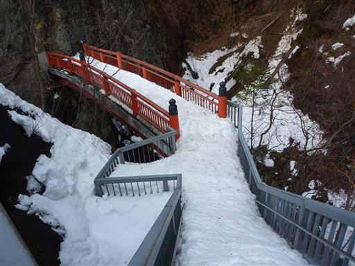
稲荷滝。なかなか立派な滝だ。水量も多い。
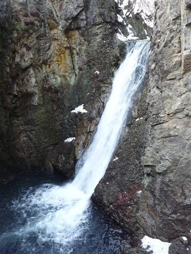
滝壺も岩に穴が開いていて大きい。
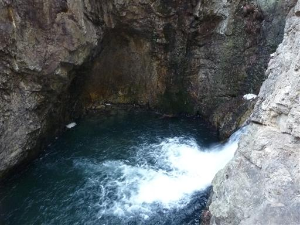
ようやく水上市街地が見えてきた。
この辺りは観光地になっていて、土産物屋も並んでいる。
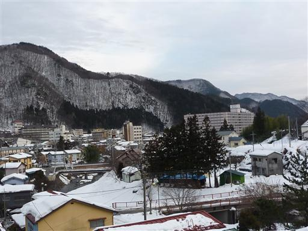
道路標識には谷川岳11kmと書かれている。
山の名前まで標識に現れるほど、谷川岳はこの辺りでは大きな存在なのだろう。
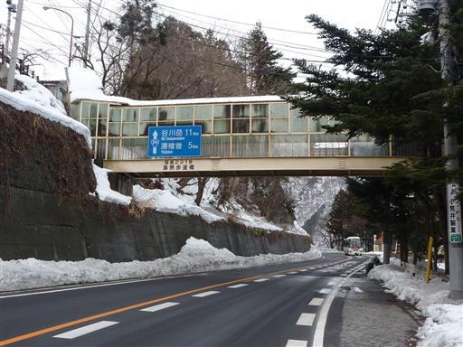
日が暮れてきて、辺りの山々に夕日が当たりだす。
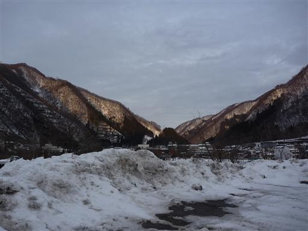
16:32 水上駅到着。
深い雪の中で登頂でき、山頂からの展望もすばらしく、よい山行だった。
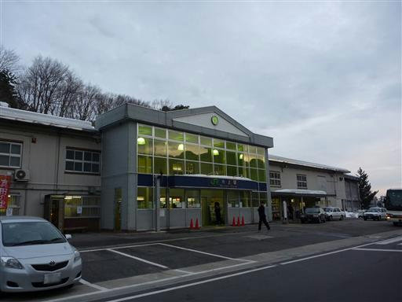